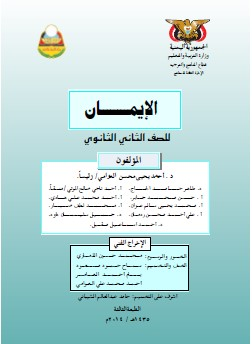
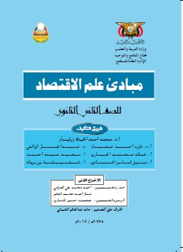

(ادبي) الصف الثاني الثانوي
(ادبي) الصف الثاني الثانوي
القائمة الرئيسية
الصف الأول
الصف الثاني
الصف الثالث
الصف الرابع
الصف الخامس
الصف السادس
الصف السابع
الصف الثامن
الصف التاسع
الصف الأول ثانوي
الصف الثاني ثانوي
الصف الثالث ثانوي
ملخصات الصف الثالث ثانوي
إختبارات إتمام الشهادة العامة
الإجابة عن أي سؤال

